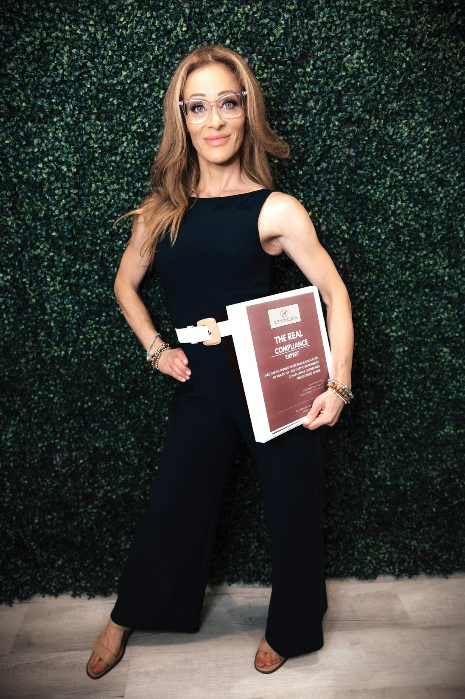

Nursing CE Course Development
CA BRN Provider #18009: Standardized Procedures, Neuromodulators, HA Dermal Fillers and More.

I’m the Founder and Lead Educator of Aesthetic Nursing Policy & Procedures, Inc. I’ve Been a Registered Nurse for More Than 27 Years and Have Worked in Aesthetic Nursing Since 2007.
My Foundation Is Clinical Research and Education: Nearly a Decade at Dana-Farber Cancer Institute Running Phase II–IV Lymphoma Trials, Then National Nurse Training Programs. That Is Where I Learned to Write Protocols That Hold Up.
After Facing My Own Licensing Issue, I Made It Right and Promised Myself I Would Help Others in This Field Do the Same.
Since Then, I’ve Guided Providers Through Licensing Matters and Supported Them During Probation. Based in San Diego, I Work With Providers Nationwide, Alongside Your Healthcare Attorney Whenever Legal Review Is Needed.
Presented to the International Society of Plastic and Aesthetic Nurses.
CA BRN Provider #18009: Standardized Procedures, Neuromodulators, HA Dermal Fillers and More.
Aesthetic Injectables Curriculum, Aesthetic Medical Institute. Neuromodulator and Filler Course, Aesthetic Medical Academy.
Helped Create the National Ig Nursing Certification Exam (IgCN) and Nursing Standards for Ig Therapy.

Book a Free 30-Minute Consultation About Your Practice.